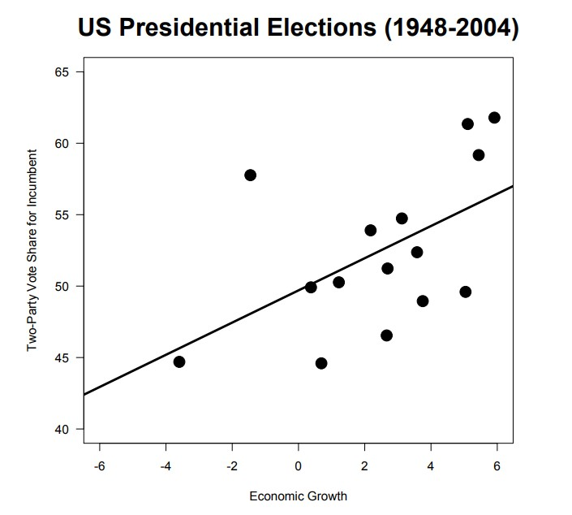
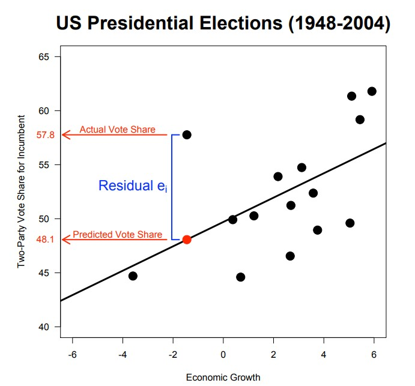
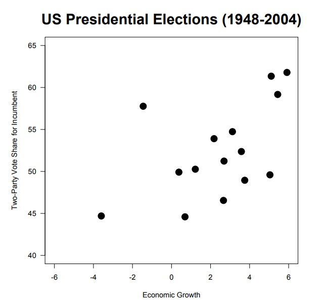
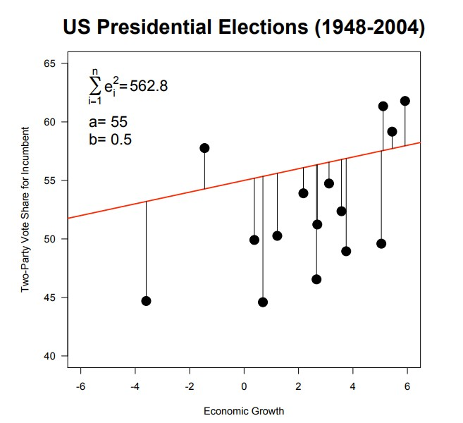
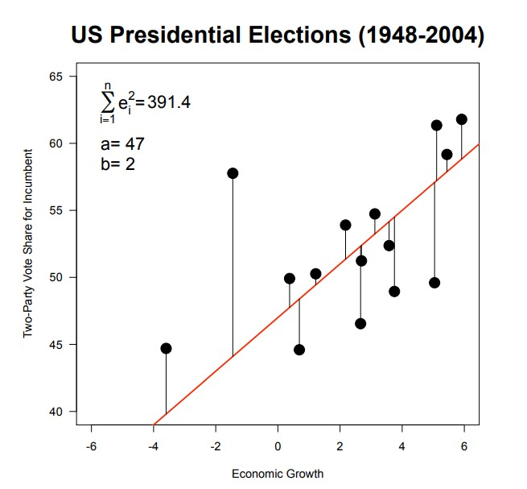
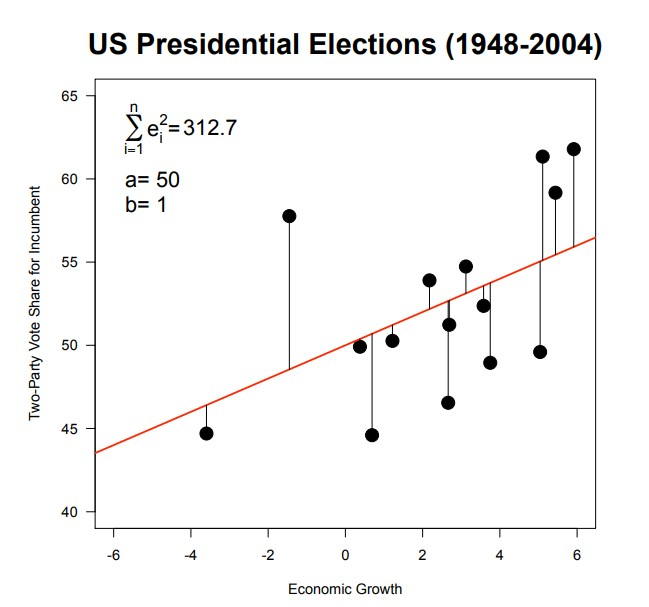
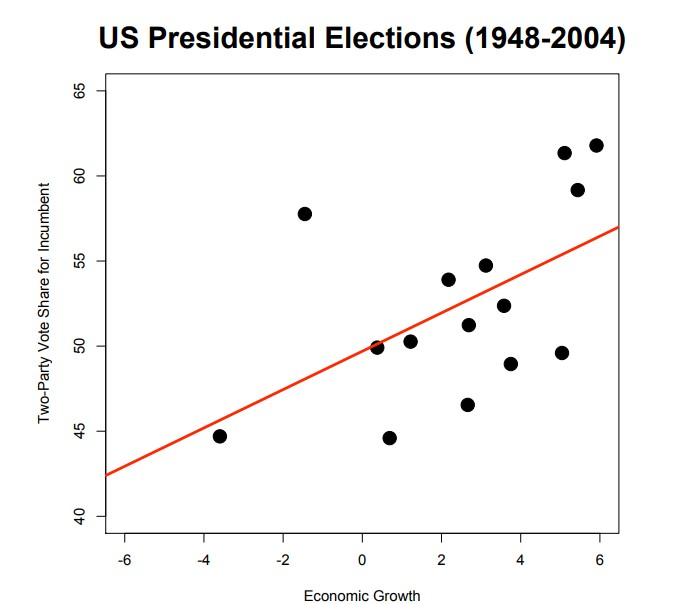
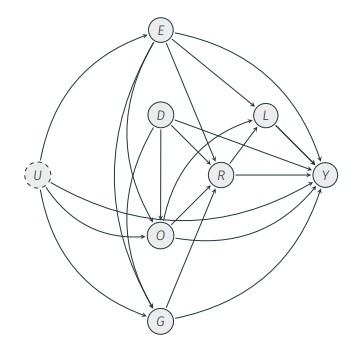
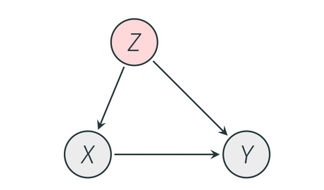

Week 6
University of Mannheim
May 15, 2024
Input: Inference - Intuition and interpretation
Linear regression
Multiple regression, causality, and statistical significance
How to deal with binary dependent variables
⏸️ 15 minute break: Get some fresh air, a coffee, …
Input: Coding example: Follow-along possible
Run regressions
Present results
If time allows: Try out the code yourself. Look at different parties, different IVs.
Regression analysis examines the relationship between a dependent variable, \(Y\), and one or more independent variables, \(X_1\)., …, \(X_k\).
The dependent variable (DV) is the quantity we want to explain.
The independent variable (IV) is the quantity that we use to explain variation in the dependent variable.
Examples DV: vote choice, level of corruption, income, democratization
Examples IV: Economic, political, institutional, or demographic variables
Linear model: \(Y = a + bX\)
\(a\) is the intercept: value of \(Y\) when \(X\) is zero.
\(b\) is the slope: change in \(Y\) for a one-unit increase in \(X\)
This model implies a perfect linear relationship.
In actual research, this is never the case, so we need to add an error term: \(Y = \beta_0 + \beta_1X + \epsilon\)
The error term (or disturbance), \(\epsilon\), represents unobserved factors other than \(X\) that affect \(Y\)
Let’s re-examine the relationship between economic growth prior to an election and the vote share received by the incumbent presidential party in the US
Let \(i = 1, ..., n\) denote observations with total sample size \(n\).
For each observation \(i\), we can write: \(VoteShare_i= \beta_0 + \beta_1Growth_i + \epsilon_i\)
\(VoteShare_i= \beta_0 + \beta_1Growth_i + \epsilon_i\)
\(Residual = Actual- Predicted\)
OLS is short for “Ordinary Least Squares”.
The best line is the line that minimizes the sum of squared residuals (SSR).
Residuals are vertical deviations from the line (the observed fitting errors)
\(e_i = y_i - (\hat\beta_0 + \hat\beta_1x_i)\)
\(e_i = y_i - (\hat y_i)\)
Conceptually, we minimize:
Minimizing the sum of squared residuals:
Minimizing the sum of squared residuals:
Minimizing the sum of squared residuals:
Minimizing the sum of squared residuals:
Our regression line: \(\hat Y = \hat\beta_0 + \hat\beta_1X\)
Interpreting the slope coefficient \(\hat\beta_1\): On average, a one-unit increase in \(X\) is associated with a \(\hat\beta_1\) unit increase in \(Y\).
The predicted value for \(X\) is \(\hat Y\).
Interpreting the intercept coefficient: When X is zero, the predicted value for \(\hat Y\) is \(\hat\beta_0\). Not necessarily a meaningful quantity!
Estimation: \(\hat{VoteShare_i} = 49.699 + 1.127 * Growth_i\)
A residual plot is a scatterplot of the regression residuals against the explanatory variable \(X\) or the predicted values \(\hat Y\).
The residual plot is a diagnostic plot as it helps us to detect patterns in the residuals.
Residual patterns diagnose model shortcomings (e.g., systematic influences on \(Y\) still have not been captured).
Ideally, residuals plots should look as if the pattern was generated by pure chance
How well does our model explain the variation in the dependent variable?
\({Explained Variance}/{Total Variance} =\)
\(1- {UnexplainedVariance}/{TotalVariance} =\)
\(R^2\)
Interpretation: Proportion of the total variance explained by the fitted model
The goodness-of-fit measure is bounded: \(0 ≤ R^2 ≤ 1\)
\(R^2\) is not resistant to outliers and increases with more IVs!
\(R^2\) increases the more explanatory variables we add.
The adjusted \(R^2\), therefore, imposes a penalty for adding independent variables.
While the regular \(R^2\) is bounded in [0, 1], the adjusted \(R^2\) even can become negative. This indicates a bad model fit.
… allows us to add covariates to our regression:
\(Y = \beta_0 + \beta_1X_1 + \beta_2X_2 + ... + \epsilon\)
Why? Increase prediction or causal explanation.
Estimation is the same for both purposes. However, the rationale differs.
Causal questions focus on the effect of a presumed cause X: “Does exposure to ‘fake news’ increase beliefs in false claims?”
Causal questions typically imply comparisons of factual and unobservable counterfactual states for each observation: What would i believe had they (not) been exposed to fake news?
The statistical solution: Compare average beliefs between those exposed and those not exposed to fake news.
Problem: Structural differences between those exposed and those not exposed to fake news.
Design-based inference uses randomization; it puts the manipulation of X (exposure to ‘fake news’) into the hands of the researcher.
Model-based inference uses theoretical models about the relationship between variables → need to accurately translate the assumed theoretical model into a statistical model!
Directed acyclical graphs (DAGs) allow us to express theoretical assumptions about causal relationships between (potentially correlated) variables given a theoretical model.
We can speak of omitted variable bias when our model fails to account for confounders:
Gender and education are related. If we regress income on education alone, we arrive at a biased assessment of the effect of education on income because of an omitted variable, i.e., gender.
Gender is a confounder and causes omitted variable bias
Since education and gender are correlated, and because gender is omitted from the first model, part of the effect of gender on income is mistakenly attributed to education.
In political science, variables are often binary or categorical.
We can easily include binary information as independent variables in our regression model.
Examples for qualitative data are:
Vote choice (Did vote or did not vote).
Gender (Is male or female).
Regime type (Is a democracy or an autocracy).
Membership status (Is a EU member state or not).
In testing statistical significance of a regression coefficient, we usually want to know if our estimated coefficient \(\hat\beta_j\) is different from zero.
We test the null hypothesis about the true population parameter, \(\beta_j\) , against the (two-sided) alternative hypothesis:
\(H_0: \beta_j = 0\)
\(H_A: \beta_j \neq 0\)
We reject the null hypothesis at a specific significance level.
A conventional significance level is at 5%.
This translates to so-called 95% confidence intervals. Confidence intervals allow us to assess uncertainty around our estimates.
A 95% confidence interval means that under repeated experiments, the given interval includes the true parameter, \(\beta\), 95 out of 100 times.
If \(H_0\) is true, we falsely reject it 5 times out of 100 (false positive, type I error).
Consider the errors for a case in which the hypotheses are “\(H_0\) No disease” and “\(H_A\) Disease”. Which error would you “prefer”?
Assuming \(H_0\) is that a patient has no disease:
Type I error: Patient is told that the test is positive, but falsely so.
Type II error: Patient is told that the test is negative, but falsely so.
In general:
Can take values between 0 and 1.
Small p−values are evidence against the null, large p-values provide little evidence against the null.
p-value < 0.05: “Statistically significant at the 5% level.
p-value < 0.01: “Statistically significant at the 1% level.
Often our dependent variable is not continuous but binary. There are many examples in the social sciences:
A voter’s choice to go to the polls.
A politician’s choice to vote “yes” or “no” in legislation (roll call data).
A government’s decision to implement an EU directive or not.
The basic problem is: How do we estimate regression models when our dependent variable is a dummy (takes values: 0 or 1)?
\(\pi_i = P(y_i = 1) = {exp(X_i\beta)}/{1+exp(X_i\beta)}\)
This model is referred to as logit model.
Unfortunately, the interpretation is not straightforward. We cannot make linear statements, but talk in so-called log odds and odds ratios (higher likelihood that something happens or not).
Try out the code yourself.
Look at different parties (not the AfD)
Have a look at the structural data. Can you think if other useful controls or main independent variables that you want to use?
Statistics | Summer Semester 2024 | University of Innsbruck